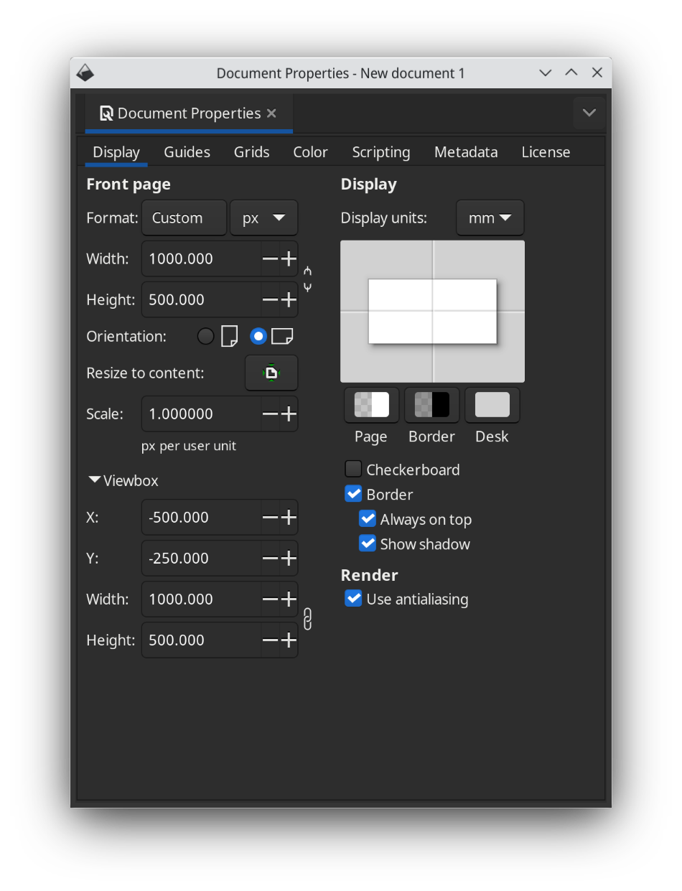
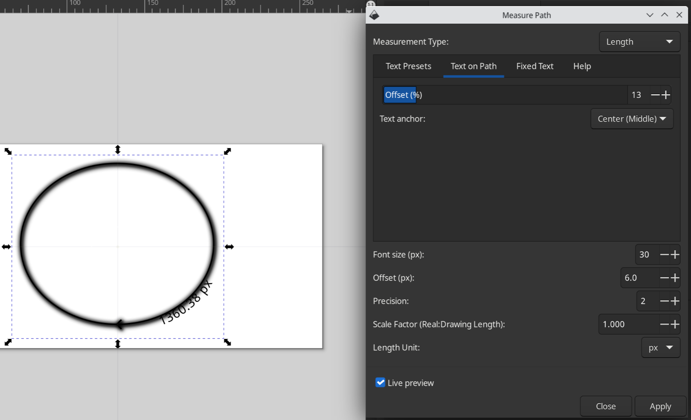

Defining a path with inkscape¶
Installation¶
If you haven’t done so, download and install inkscape from https://inkscape.org or using your favorite package manager.
Setting up the scene¶

Start inkscape, create a new document. In File -> Document Properties, set up the page size to 1000x500 pixels (or whatever your chosen size).
In that same dialog, also edit the viewBox coordinates to -W/2 -H/2 W H, where W is the width of your drawing and H is the height of your drawing.
Drawing a shape¶
You can now draw objects and paths onto the canvas.
Convert all objects to paths using Path -> Object to Path
For every path, check its orientation by using the Object -> Fill and stroke -> Stroke style and adding a middle arrow. This will show you how the text will flow around the path.
You can also check the starting point of a path by adding a start arrow.
If needed, use Path -> Reverse and/or Object -> Flip horizontal/Flip vertical to correct the orientation of the path.
You can also further resize and align the paths onto your scene as desired.
Disable the arrows again
Make sure to use Path -> Union, Difference, Intersection, etc operations as needed so you end up with a single path.
Measuring the path¶
If you intend to animate the textOffset parameter, it is very useful to know how long the path is.
You can find out using the Extensions -> Visualize Path -> Measure Path
Set measurement type to Length, check Live Preview and play with the Offset slider in the Text on Path to see which offsets correspond to which positions.
TODO: how to renumber nodes